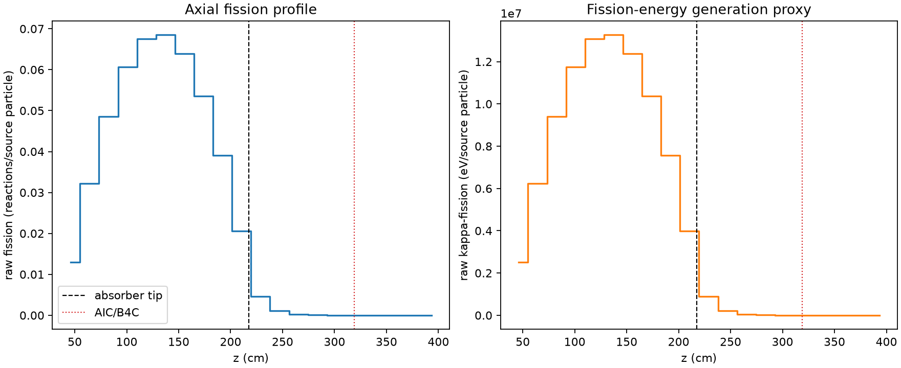
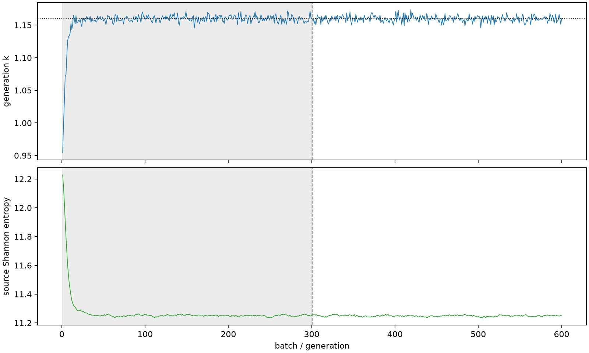

| field | value |
|---|---|
| experiment | V2-STAGE_256_OGRENCI_02-0021 |
| k | 1.1600067189036902 |
| MC standard error | 0.0001930827463466817 |
| seconds | 941.4543343889964 |
| acceptance | not_assessed |
| convergence | review_required |
Completed is output integrity only; physical and statistical review required. Zero tallies do not prove zero production or zero uncertainty.
| diagnostic | value |
|---|---|
| geometric fuel voxels | 5280 |
| zero fission tally voxels | 733 |
| low signal fuel voxels | 1689 |
| low signal fission share | 8.959209581278165e-05 |
| low signal kappa share | 8.962483544338874e-05 |
| important fission share | 0.9500598592695674 |
| previous filter included | 3591 |
| duration estimate s | 1562.5173488400023 |
| actual minus estimate s | -621.063014451006 |
| fission relative MC error | statistics |
|---|---|
| all_geometric_fuel | {"voxels": 5280, "positive_mean_voxels": 4547, "zero_mean_voxels": 733, "undefined_relative_error_voxels": 733, "median": 0.011842692181812964, "p95": 0.8729359932394047, "maximum": 1.0000000000000002} |
| low_signal | {"voxels": 1689, "positive_mean_voxels": 956, "zero_mean_voxels": 733, "undefined_relative_error_voxels": 733, "median": 0.5888111230753019, "p95": 1.0, "maximum": 1.0000000000000002} |
| important_95pct | {"voxels": 2314, "positive_mean_voxels": 2314, "zero_mean_voxels": 0, "undefined_relative_error_voxels": 0, "median": 0.007267125350736452, "p95": 0.011439355767125453, "maximum": 0.013666130984276038} |
| outside_previous_filter | {"voxels": 1689, "positive_mean_voxels": 956, "zero_mean_voxels": 733, "undefined_relative_error_voxels": 733, "median": 0.5888111230753019, "p95": 1.0, "maximum": 1.0000000000000002} |
| kappa_fission relative MC error | statistics |
|---|---|
| all_geometric_fuel | {"voxels": 5280, "positive_mean_voxels": 4547, "zero_mean_voxels": 733, "undefined_relative_error_voxels": 733, "median": 0.011828422802463922, "p95": 0.8728310525703787, "maximum": 1.0000000000000002} |
| low_signal | {"voxels": 1689, "positive_mean_voxels": 956, "zero_mean_voxels": 733, "undefined_relative_error_voxels": 733, "median": 0.5896443058628755, "p95": 1.0, "maximum": 1.0000000000000002} |
| important_95pct | {"voxels": 2314, "positive_mean_voxels": 2314, "zero_mean_voxels": 0, "undefined_relative_error_voxels": 0, "median": 0.007259134178673233, "p95": 0.011426725803570308, "maximum": 0.013650663403261952} |
| outside_previous_filter | {"voxels": 1689, "positive_mean_voxels": 956, "zero_mean_voxels": 733, "undefined_relative_error_voxels": 733, "median": 0.5896443058628755, "p95": 1.0, "maximum": 1.0000000000000002} |
| axial bin | fission share | kappa-fission share |
|---|---|---|
| 1 | 0.027369921716191282 | 0.027370996428174442 |
| 2 | 0.06807724194227832 | 0.06807671418007287 |
| 3 | 0.10244687270096772 | 0.10244638570484817 |
| 4 | 0.12821421337328592 | 0.12821299310983034 |
| 5 | 0.14261125470817623 | 0.14261006227074932 |
| 6 | 0.14465810898956827 | 0.14465737225357972 |
| 7 | 0.1348894016303667 | 0.13488855557242388 |
| 8 | 0.11320022384788417 | 0.11319956928513704 |
| 9 | 0.0823993287604911 | 0.08239880178647488 |
| 10 | 0.04346993812145362 | 0.043470811296262304 |
| 11 | 0.009613242698776274 | 0.009616408894693958 |
| 12 | 0.0023318196520181623 | 0.0023326307983437423 |
| 13 | 0.0005509076227682186 | 0.0005511076417445041 |
| 14 | 0.00013035556236815903 | 0.00013040746453183306 |
| 15 | 2.9753710656958395e-05 | 2.976403107167823e-05 |
| 16 | 6.287086988514657e-06 | 6.289607496531789e-06 |
| 17 | 1.0092296188249303e-06 | 1.010702459075066e-06 |
| 18 | 8.83203552372229e-08 | 8.86836966917205e-08 |
| 19 | 3.0325786229523324e-08 | 3.0288409012264787e-08 |
| 20 | 0.0 | 0.0 |
Histories include the inactive-to-active transition at batch 300. kappa-fission approximates fission energy production, not total heat deposition.

